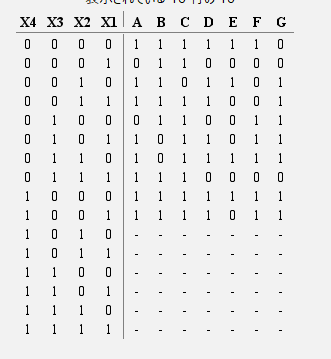
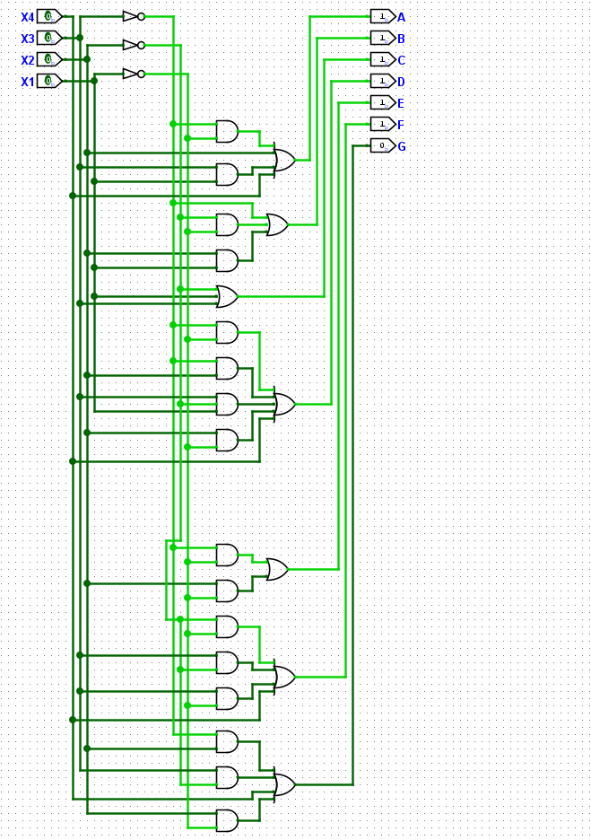

完成したものがこちら

大きさは4*2チャンク程度.
動作の詳細は以下のURLから. https://r-0715.github.io/main-1/1st-exp-img/index.html
今回はマインクラフトで7セグメントLED(以降7セグ)を作成していきたいと思う.
7セグって?となる人がいると思うのではじめに簡単に説明する.
7セグとは,7つの細長いLEDを「8」の字型に配置して,数字を表す電子部品のことである.
ガソリンスタンドの価格表示板の数字やデジタル時計の数字などに用いられているあれである.
7セグの作成は,マイクラ内で行われる.使用する資材は以下のとおりである.
2進数は0と1だけで数を表す考え方である.0,1,2,3,4,5,6,7,8,9に対応する2進数は
0000,0001,0010,0011,0100,0101,0110,0111,1000,1001である.
この実験ではこれさえ理解していれば問題ない.
論理回路とは,論理演算という計算の方法を回路であらわすことである.
論理演算とは,「NOT」,「AND」,「OR」,「X-OR」を用いた計算方式である.
論理回路を作成するためには,いくつか工程を踏む必要がある.
真理値表の作成は,最も重要な工程である.
真理値表は入力されるパターンをすべて書き出し,その入力時の出力結果を横に書いた表である

X4～X1まで2進数4bitの入力で,上から0～15までを表す入力になっている.(10(1010)以降は10進数1桁であらわすことができないので未定義-とする)
また,表の右側アルファベットA～Gは7セグのそれぞれの位置を示している.
真理値表を書けば,論理演算を用いた式としてあらわすことができ,これは直接,マイクラ内に実装できる.
先補での真理値表をもとに作成した回路図は

あとはこれをマイクラ内で作成すればよい
完成したものがこちら
大きさは4*2チャンク程度.
動作の詳細は以下のURLから. https://r-0715.github.io/main-1/1st-exp-img/index.html
作成は約3時間
設計ミスがないように規則的に装置を並べた
この作品はすべて以下の画像の装置の組み合わせでできている(今回は左端のものは使用していない).